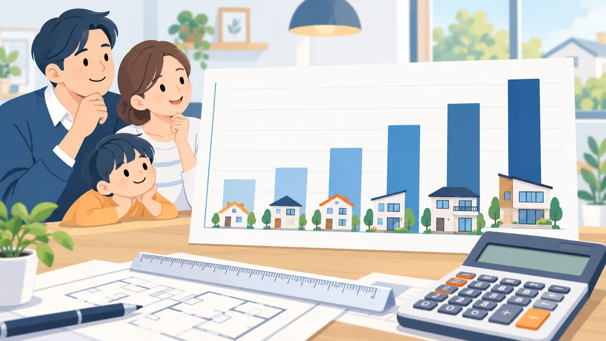

COLUMN
年収別・住宅ローン借入額の目安早見表。お借入れがある場合の引き算のしかた

「自分の年収だと、住宅ローンはいくらまで検討できるのか」。相談で最初に聞かれる質問です。この記事では、返済負担率の考え方をもとに、年収別の借入額の目安を早見表にしました。あわせて、カードローンや車のローンなど既存のお借入れがある場合に、目安がどれだけ下がるかを一覧にしています。
この記事について
- 表の数値はすべて、返済負担率の上限を 30% または 35%、計算用の金利を年 3%、返済期間を 35 年と仮定した目安です。
- 実際の上限や計算に使う金利は金融機関ごとに異なり、判断は金融機関が行います。表の数値を保証するものではありません。
早見表の前提
- 返済負担率＝年間の返済額の合計 ÷ 年収（税込）
- 計算用の金利 年 3%、返済期間 35 年で、100 万円あたりの毎月の返済額を約 3,850 円として計算
- 他のお借入れがない状態の目安
返済負担率の考え方と計算式は 返済負担率の計算方法と年収別の目安 で解説しています。
年収別・借入額の目安（お借入れがない場合）
| 年収 | 上限 30% の月額 | 借入額の目安（30%） | 上限 35% の月額 | 借入額の目安（35%） |
|---|---|---|---|---|
| 300 万円 | 7.5 万円 | 約 1,950 万円 | 8.8 万円 | 約 2,280 万円 |
| 350 万円 | 8.8 万円 | 約 2,270 万円 | 10.2 万円 | 約 2,650 万円 |
| 400 万円 | 10.0 万円 | 約 2,600 万円 | 11.7 万円 | 約 3,030 万円 |
| 450 万円 | 11.3 万円 | 約 2,920 万円 | 13.1 万円 | 約 3,410 万円 |
| 500 万円 | 12.5 万円 | 約 3,250 万円 | 14.6 万円 | 約 3,790 万円 |
| 600 万円 | 15.0 万円 | 約 3,900 万円 | 17.5 万円 | 約 4,550 万円 |
| 700 万円 | 17.5 万円 | 約 4,550 万円 | 20.4 万円 | 約 5,300 万円 |
金融機関によって上限が 30% の年収帯と 35% の年収帯があるため、両方を載せています。年収 400 万円未満は 30% 前後、それ以上は 35% 前後を上限とする例が多いとされていますが、金融機関により異なります。
お借入れがある場合の引き算
既存のお借入れの毎月の返済額を、上の表の「月額」から差し引き、残った月額 ÷ 3,850 円 × 100 万円 が目安になります。毎月の返済額ごとに、目安がどれだけ下がるかを一覧にしました。
| 既存のお借入れの毎月の返済額 | 借入額の目安が下がる幅 |
|---|---|
| 1 万円 | 約 260 万円 |
| 2 万円 | 約 520 万円 |
| 3 万円 | 約 780 万円 |
| 5 万円 | 約 1,300 万円 |
たとえば年収 450 万円（上限 35%）で、車のローン 月 3 万円がある場合は、約 3,410 万円 − 約 780 万円 ＝ 約 2,630 万円が目安です。この「下がる幅」は年収に関係なく同じです。年収が低いほど、お借入れの影響が相対的に大きくなることが分かります。
目安と「返せる額」は別
早見表の数字は、金融機関が検討する上限の目安であって、無理なく返せる額ではありません。教育費、車の買い替え、家族の変化など、これからの支出を考えると、上限いっぱいで組むのは避けたほうがよい場合が多いです。実際の相談では、目安の 8〜9 割程度に収める計画から検討するのが一般的です。
目安を上げる方法
- 既存のお借入れを整理して、毎月の返済額の合計を下げる（使っていないカードローンの整理、リボ払い・分割払いの整理）
- 住宅の取得と合わせて既存のお借入れの返済資金を検討できる商品を使う（商品の型と条件の見方）
- ご夫婦の収入を合わせて見る方法を確認する